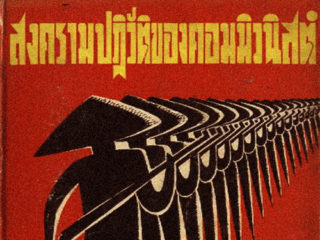
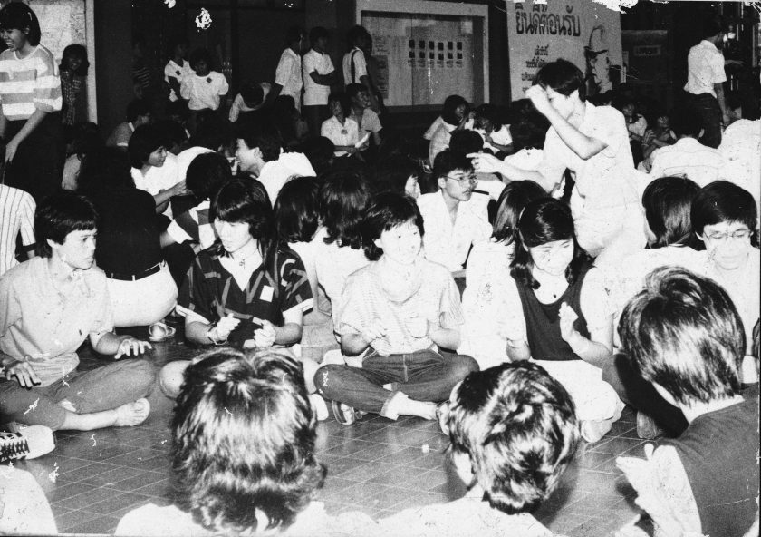

ปัจจัยที่นำมาสู่กรณี 6 ตุลาฯ
จากเงื่อนไขทางการเมืองที่กล่าวมา เป็นบริบทพื้นฐานที่จะทำความเข้าใจการเกิดเหตุการณ์ 6 ตุลาคม 2519 ซึ่งปัจจัยที่นำมาสู่กรณี 6 ตุลาฯ สามารถพิจารณาตามหัวข้อได้ดังนี้คือ
1.การเฟื่องฟูของอุดมการณ์สังคมนิยม
2.การต่อสู้เพื่อความเป็นธรรมของกรรมกร ชาวนา และประชาชนกลุ่มต่างๆ
3.การเคลื่อนไหวของขบวนการนักศึกษา
4.การเปลี่ยนแปลงในด้านวัฒนธรรม
5.การปรับตัวของขบวนการนักศึกษา
6.ขบวนการทางสังคมอื่น ๆ